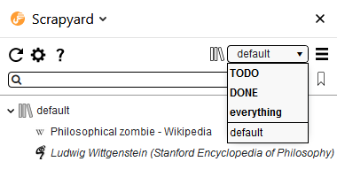
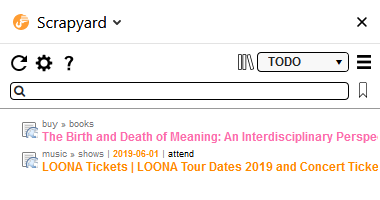
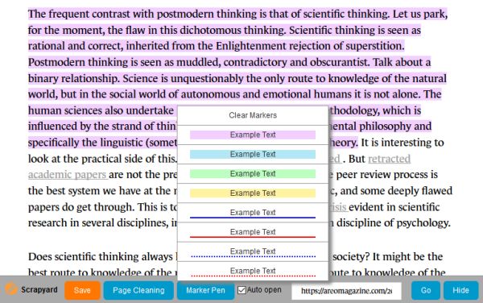

Scrapyard is a Firefox extension where you can store and organize bookmarks, page fragments, complete web-pages or PDF documents in unlimited quantities. By utilizing browser local storage Scrapyard does not require external tools to operate and allows to import or export data in org-mode format.
To capture a web-page or its fragment select the page part you want to archive, open Scrapyard popup window
by clicking the icon on browser toolbar, choose the necessary destination folder, and press the "Bookmark"
or "Archive" button. The "Bookmark" button stores only web-page URLs, while the "Archive" button stores the
current selection, the whole page (if there is no active selection) or the whole document, if the opened link
is not a web-page.
To capture a web-page or selection with the natural language interface just install UbiquityWE Ubiquity knows about Scrapyard, but it is necessary to restart Firefox if you installed Ubiquity first. Use the "bookmark" or "archive" commands with parameters to archive a page into the required destination. The folders in bookmark path will be created automatically if they do not exist. The first folder in the path is always the name of a bookmark shelf. The name of the 'default' shelf can be substituted by '~' character.

The "scrapyard" command allows to browse and filter captured bookmarks. See Ubiquity help for more details.
It is possible to create unlimited amount of bookmark shelves in Scrapyard to structure your captures. The shelf named "everything" allows to browse and search through all existing shelves. Scrapyard built-in shelves are marked with bold font and can not be deleted or renamed (including the "default" shelf).

In the bookmark tree archives are marked with italic font, while ordinary bookmarks with the regular one.
It may be necessary to prioritize your bookmarks for processing. You may accomplish this by assigning one of the following TODO priorities to a bookmark: TODO, WAITING or POSTPONED. You may find all your prioritized bookmarks at the built-in "TODO" shelf, sorted in the corresponding order. All bookmarks marked as DONE or CANCELLED are displayed at the "DONE" shelf.

If shelf name and path of a bookmark provide not enough context, it is possible to fill the "Details" and "Date" fields in bookmark properties. Only ISO (YYYY-MM-DD) date format is supported. Expired TODO items will be displayed first regardless of the assigned state.
If you often review your captures, it may be useful to highlight important key points in them. To make this possible, editing toolbar at the archived page provides a set of text markers and also allows to clean page of unnecessary elements.

It is necessary to manually save changes after the editing is done.